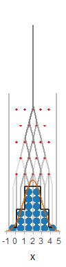
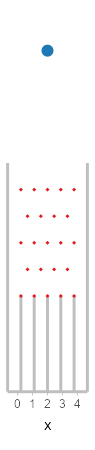

plinko is an R package for creating animated Plinko boards (as known as Galton boards, quincunxes, or bean machines). It helps determine Plinko board parameters and generates plausible paths through a Plinko board that result in a desired sample or set of quantiles, then renders the Plinko board as an animated GIF or video.
Installation
You can install plinko with:
# install.packages("remotes") remotes::install_github("mjskay/plinko")
Example
This example requires the following libraries:
library(plinko) library(dplyr) library(ggplot2) library(distributional) library(ggdist) theme_set(theme_ggdist())
You can construct plinko boards using distributions from the distributional package:
set.seed(1234) # for reproducibility dist = dist_normal(2, 1) board = plinko_board(dist, n_bin = 5, n_ball = 20) autoplot(board)

The plot shows the pins and slots in the board, as well as the target distribution (in orange), the binomial distribution used to approximate it (in black), and 20 quantiles from the target distribution (in blue). By default, quantiles of the target distribution (rather than random samples) are used in order to ensure the final distribution of balls is representative of the target distribution. If you want a random sample of balls instead, you can pass sampling = "random" to plinko_board().
Once you are happy with the appearance of your plinko board, you can animate it using animate(), which by default will omit the annotations of the paths and distributions (though these can be added back in with show_paths = TRUE, show_dist = TRUE, or show_target_dist = TRUE). Here we’ll also use tween_balls() to add some tweening frames so the balls drop more smoothly, and set a height on the animation (given a desired height, animate.plinko_board() will attempt to find a reasonable width automatically):
board %>% # filter_frames(ball_id == 1, !stopped) %>% tween_balls(frame_mult = 4) %>% animate(height = 450, fps = 30, end_pause = 2 * 30)

For a more comprehnsive example of how to customize your animation (including customizing aesthetics, geoms, and annotations), see vignette("presidential-plinko").